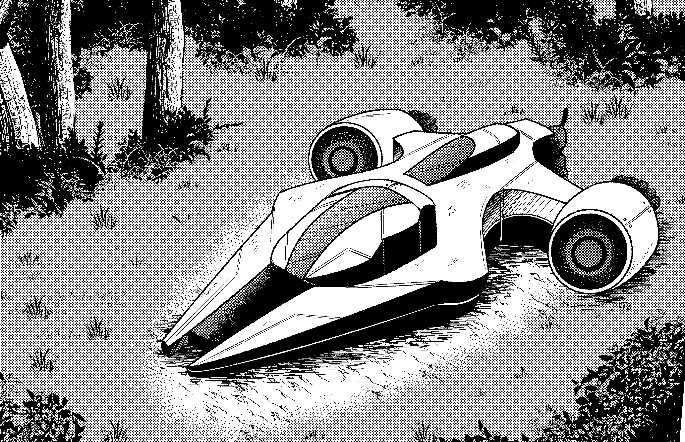

Le voyage dura cinq longues années. Cinq années à travers le vide spatial, les champs d’astéroïdes et les tempêtes d’énergie.
Puis enfin…
Une planète apparut.
Vivante. Habitée.
Avadora s’en approchait lentement, dissimulée par son camouflage. Dans la nuit de l’espace, le vaisseau passa totalement inaperçu. Couaxia observait cette planète inconnue avec fascination. Une nouvelle aventure commençait. Et elle ignorait encore que ce monde allait bouleverser son destin à jamais. Cinq longues années s’étaient écoulées depuis leur départ de Drasquin. Cinq années à traverser des nébuleuses aux couleurs irréelles, à contourner des champs d’astéroïdes et à explorer des systèmes oubliés.
À bord d’Avadora, l’équipage avait changé. Couaxia avait accueilli une nouvelle personne à bord. À ses côtés se tenaient ses compagnons de toujours, Hylda et Cita, fidèles et inséparables. Et désormais, près de la baie panoramique, se tenait Natsu. Réduit à une taille intermédiaire, ses ailes repliées dans son dos, il observait l’écran principal.
— Destination confirmée, annonça la voix douce d’Avadora.
— Planète classifiée : Terre.
Des océans immenses, des nuages tourbillonnants et des continents verdoyants se sont dressés devant nous, formant ainsi une sphère bleue à l'horizon.
Couaxia sentit ses trois cœurs s’accélérer.
— C’est ici… murmura-t-elle.
Hylda s’approcha des consoles secondaires pour affiner les relevés atmosphériques.
Cita analysait les signaux radio captés depuis la surface.
— Activité technologique détectée, indiqua Cita.
— Civilisation avancée.
Natsu plissa les yeux.
— Ils ne ressemblent pas aux Draquins…
Couaxia esquissa un sourire.
— Non. Ce sont des humains.
— Des humains ? Ça ce mange ? demanda Natsu
— Mais bien sur que non Natsu ! s'exclama Couaxia
Avadora activa son système de camouflage optique. L’appareil pénétra l’atmosphère terrestre dans une traînée invisible. Les frictions embrasèrent brièvement la coque avant que les boucliers thermiques ne stabilisent la descente. À travers la baie, les lumières des villes scintillaient dans la nuit. Des millions d’êtres vivaient là-dessous.
Natsu resta silencieux.
— Cette planète est pleine de vie…
Sa voix n’exprimait plus la faim. Mais de la curiosité.
Couaxia posa une main contre la vitre.
— C’est pour ça que je suis venue.
Hylda leva les yeux de ses instruments.
— Zone d’atterrissage recommandée : région isolée, forêt dense.
— Parfait, répondit Couaxia.
Avadora descendit lentement vers une vaste forêt plongée dans l’obscurité, fluctuation des appareils. Couaxia observa le Drasquin en silence. Même épuisé, il restait immense. Les arbres se courbèrent sous le souffle discret des réacteurs. La rampe s’ouvrit dans un silence maîtrisé. L’air terrestre pénétra dans le vaisseau.
Nouveau monde.
Nouvelle civilisation.
Nouvelles connaissances.
Couaxia se tourna vers son équipage.
— Bienvenue sur Terre.
Natsu inspira profondément.
— Alors… c’est ici que commence la vraie aventure.
Dans l'ombre des arbres, une personne était déjà en train de les observer.
